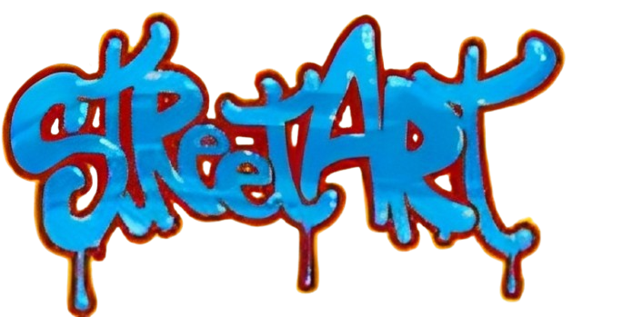

Conheça o
 Bora lá!𝕺 𝖖𝖚𝖊 𝖊́ 𝖔 𝕾𝖙𝖗𝖊𝖊𝖙 𝕬𝖗𝖙?
A sᴛʀᴇᴇᴛ ᴀʀᴛ (ᴀʀᴛᴇ ᴅᴇ ʀᴜᴀ) ᴇ́ ᴜᴍᴀ ғᴏʀᴍᴀ ᴅᴇ ᴇxᴘʀᴇssᴀ̃ᴏ ᴀʀᴛɪ́sᴛɪᴄᴀ ғᴇɪᴛᴀ ᴇᴍ ᴇsᴘᴀᴄ̧ᴏs ᴘᴜ́ʙʟɪᴄᴏs, ᴄᴏᴍᴏ ᴍᴜʀᴏs, ғᴀᴄʜᴀᴅᴀs ᴇ ᴄᴀʟᴄ̧ᴀᴅᴀs, ɢᴇʀᴀʟᴍᴇɴᴛᴇ ғᴏʀᴀ ᴅᴇ ɢᴀʟᴇʀɪᴀs ᴇ ᴍᴜsᴇᴜs. Sᴜʀɢɪᴜ ᴄᴏᴍ ғᴏʀᴄ̧ᴀ ɴᴀs ᴅᴇ́ᴄᴀᴅᴀs ᴅᴇ 1960 ᴇ 1970, ᴘʀɪɴᴄɪᴘᴀʟᴍᴇɴᴛᴇ ᴇᴍ ᴄɪᴅᴀᴅᴇs ᴄᴏᴍᴏ Nᴏᴠᴀ Yᴏʀᴋ, ʟɪɢᴀᴅᴀ ᴀᴏ ɢʀᴀғɪᴛᴇ ᴇ ᴀ̀ ᴄᴜʟᴛᴜʀᴀ ʜɪᴘ ʜᴏᴘ, ᴍᴀs sᴜᴀs ʀᴀɪ́ᴢᴇs ᴘᴏᴅᴇᴍ sᴇʀ ᴀssᴏᴄɪᴀᴅᴀs ᴀ ᴍᴀɴɪғᴇsᴛᴀᴄ̧ᴏ̃ᴇs ᴜʀʙᴀɴᴀs ᴇ ᴘᴏʟɪ́ᴛɪᴄᴀs ᴀɴᴛᴇʀɪᴏʀᴇs. Nᴏ ᴅɪᴀ ᴀ ᴅɪᴀ, ᴇsᴛᴀ́ ᴘʀᴇsᴇɴᴛᴇ ᴇᴍ ᴍᴜʀᴀɪs ᴄᴏʟᴏʀɪᴅᴏs, ɢʀᴀғɪᴛᴇs ᴀᴜᴛᴏʀᴀɪs, ᴇsᴛᴇ̂ɴᴄᴇɪs, sᴛɪᴄᴋᴇʀs ᴇ ɪɴᴛᴇʀᴠᴇɴᴄ̧ᴏ̃ᴇs ǫᴜᴇ ᴛʀᴀɴsғᴏʀᴍᴀᴍ ᴏ ᴀᴍʙɪᴇɴᴛᴇ ᴜʀʙᴀɴᴏ. undefined́ ᴜsᴀᴅᴀ ᴛᴀɴᴛᴏ ᴘᴀʀᴀ ᴘʀᴏᴛᴇsᴛᴏ ᴇ ᴄʀɪ́ᴛɪᴄᴀ sᴏᴄɪᴀʟ ǫᴜᴀɴᴛᴏ ᴘᴀʀᴀ ᴇᴍʙᴇʟᴇᴢᴀʀ ᴇ ʀᴇᴠɪᴛᴀʟɪᴢᴀʀ ᴇsᴘᴀᴄ̧ᴏs. Eɴᴛʀᴇ ғɪɢᴜʀᴀs ᴘᴜ́ʙʟɪᴄᴀs ᴅᴇssᴇ ᴍᴏᴠɪᴍᴇɴᴛᴏ ᴇsᴛᴀ̃ᴏ Bᴀɴᴋsʏ (Rᴇɪɴᴏ Uɴɪᴅᴏ), Sʜᴇᴘᴀʀᴅ Fᴀɪʀᴇʏ (EUA), Kᴏʙʀᴀ (Bʀᴀsɪʟ) ᴇ Jᴇᴀɴ-Mɪᴄʜᴇʟ Bᴀsǫᴜɪᴀᴛ (EUA), ǫᴜᴇ ᴀᴊᴜᴅᴀʀᴀᴍ ᴀ ᴄᴏɴsᴏʟɪᴅᴀʀ ᴀ sᴛʀᴇᴇᴛ ᴀʀᴛ ᴄᴏᴍᴏ ʟɪɴɢᴜᴀɢᴇᴍ ᴄᴜʟᴛᴜʀᴀʟ ʀᴇᴄᴏɴʜᴇᴄɪᴅᴀ ᴍᴜɴᴅɪᴀʟᴍᴇɴᴛᴇ.
𝕰𝖝𝖊𝖒𝖕𝖑𝖔𝖘
Desenvolvido por Layslla e Lu >:D